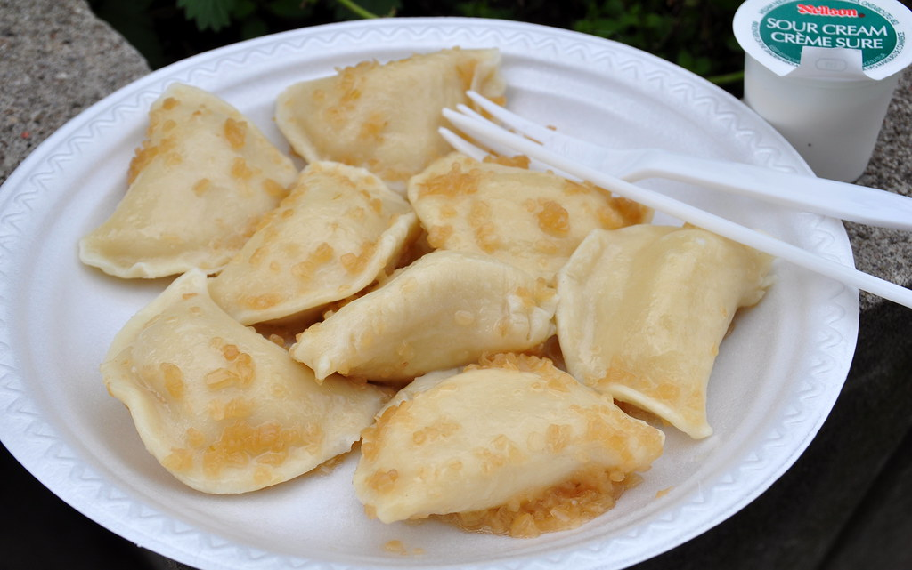
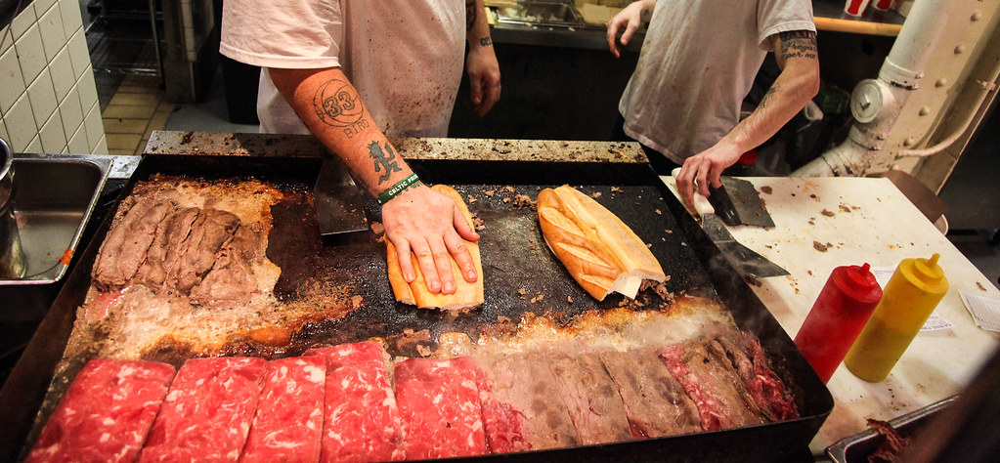

Cheesesteaks are the first thing on your mind when it comes to delicious food in PA. And most likely Philadelphia crosses your mind as to where to get the best cheesesteaks. But that couldn't be further from the truth. Tourist sites will tell you to go to Pat's or Geno's in south Philly. No local goes to those places. The lines are long from all the visitors. Although Philly does certainly have a few locations that do cheesesteaks right, you don't have to go into Philly to experience an amazing cheesesteak. Just outside Philadelphia are Bucks and Lehigh County. In Bucks County, I highly recommend Lee's Hoagie house and Giovanni's. Both have high ratings and are really good. In Lehigh Valley the best cheesesteaks are Sewards in Allentown and Wiz Kidz in Bethlehem. The lines here aren't nearly as long as the one's in Philly and you don't have to deal with traffic or those pesky tourists. Perogies are also really popular in PA. Think mashed potatoes stuffed in a pocket of bread. They are buttery and usually you get them with salt and ketchup. I don't think I have ever been to a restaurant in PA that didn't have a side of perogies with your meal.
